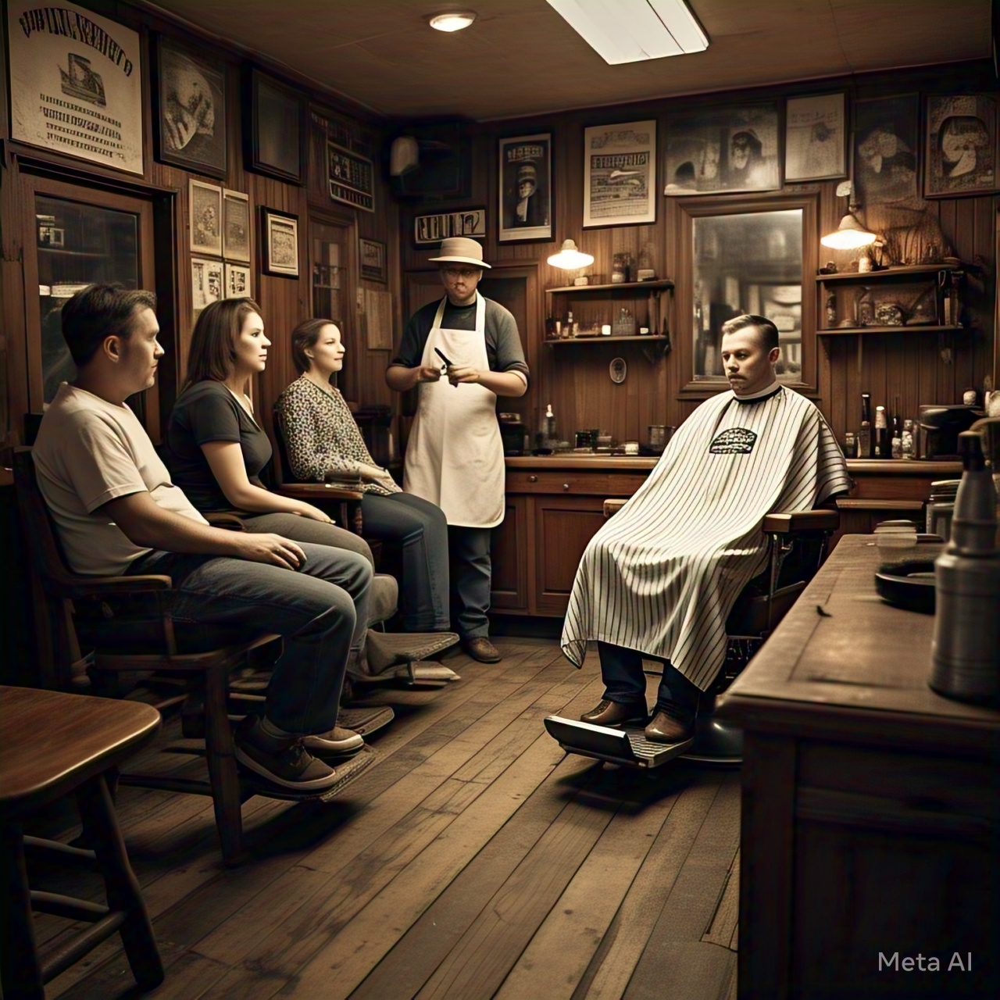

Sobre
O Sonho de Seu João
Tudo começou há mais de 20 anos, quando Seu João, um homem simples e trabalhador, decidiu abrir sua própria barbearia em um pequeno bairro da cidade. Seu João sempre foi apaixonado por cortar cabelo e fazer barbas, e ele sonhava em criar um local onde os homens pudessem se sentir confortáveis e bem cuidados.
Com muito esforço e dedicação, Seu João conseguiu transformar um pequeno espaço em uma barbearia acolhedora e bem equipada. Ele investiu em ferramentas de alta qualidade e se esforçou para criar um ambiente aconchegante, com cadeiras confortáveis e decorações clássicas.
O Legado
Ao longo dos anos, a Barbearia de Seu João se tornou um ponto de referência no bairro. Os homens da região começaram a frequentar a barbearia não apenas para cortar o cabelo, mas também para socializar e se sentir parte de uma comunidade. Seu João se tornou uma figura respeitada e querida no bairro, conhecido por sua habilidade com tesouras e sua capacidade de ouvir e aconselhar.
Quando Seu João se aposentou, ele passou a barbearia para seu filho, Joãozinho. Joãozinho havia crescido ajudando o pai na barbearia e havia aprendido todos os truques do ofício. Ele se esforçou para manter a tradição da barbearia, mas também para modernizá-la e atrair uma nova geração de clientes.
A Nova Geração
Hoje em dia, a Barbearia de Seu João é um local vibrante e animado, onde os homens podem se sentir confortáveis e bem cuidados. Joãozinho e sua equipe de barbeiros são conhecidos por sua habilidade e criatividade, e a barbearia oferece uma variedade de serviços, desde cortes de cabelo clássicos até barbas e corte de bigodes.
A barbearia também é um local de encontro para a comunidade, onde os homens podem se reunir para conversar, assistir a esportes e se divertir. A Barbearia de Seu João é um verdadeiro ponto de referência no bairro, e sua história e tradição continuam a inspirar e a atrair novos clientes.
Serviços
-
Corte de Cabelo

É o serviço mais básico e essencial de uma barbearia. O barbeiro deve ser habilidoso em cortar cabelos de diferentes comprimentos e estilos.
-
Barba e Bigode

A manutenção da barba e do bigode é um serviço fundamental em uma barbearia. Isso inclui cortar, aparar e modelar a barba e o bigode.
-
Navalha

O corte com navalha é um serviço clássico de barbearia que exige habilidade e precisão. É ideal para quem busca um corte mais próximo e definido.
-
Serviço Extra
Aparação e Hidratação

Aparar as sobrancelhas, orelhas e nariz é um serviço importante para manter a higiene e a aparência pessoal. Além disso, a hidratação da pele e do cabelo também é essencial.
Contato
Texto de contato